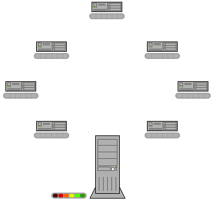

![]()
Как работает технология Torrent(BitTorrent)?
Современные Torrent-клиенты работают на основании технологии BitTorrent – это протокол, разработанный Брэм Коэн, программистом из Америки. Здесь вы познакомитесь с этой технологией.
Рассмотрим на пример
Изначально ситуация была такова: школьные годы, домашнее задание по математике решил всего один «ботан», но сдать нужно каждому. Так приходилось за 1 перемену списать решение всем 30 одноклассникам. Одновременное списывание возможно только 2-м, если хорошо постараться, 4-м ученикам. Каждому потребуется 3 минуты для перенесения информации, а перемена содержит только 15 минут. Так успеет переписать только 10-20 человек, требуется решение выходящее за стандартные рамки. Учтём, что раз я уже списал задание, могу его передать другим людям и таким образом моя тетрадь умножит эффективность фактически вдвое. По мере списывания и увеличения количества ответов, информации становится больше и одновременно большее количество людей могут загрузить данные, в нашем примере – списать домашку
Простые расчеты:
- Спустя 3 минуты высокий бал получит отличник, который сделал задание, и 2 двоечника.
- Через 6 минут: из 3 тетрадей получится списать 6 ученикам (уже сформировалось 9 человек с предыдущими).
- Через 9 минут: к сумме готовых ответов прибавляется 18 решений (в сумме 27 человек).
- К 12 минуте: остались последние 3 неудачника, которым нужно успеть за 3 минуты выполнить задание и сбегать в туалет.
Говоря кратко: каждый отдельный и объёмный файл разделяется на множество небольших отрывков и, пользователь принимает файлы по кусочку. Когда на компьютере появился файл, он может передать его дальше.
Работа технологии BitTorrent
Перед началом скачивания клиент подсоединяется к трекеру по адресу, указанному в торрент-файле, сообщает ему свой адрес и хеш-сумму торрент-файла, на что в ответ клиент получает адреса других клиентов, скачивающих или раздающих этот же файл. Далее клиент периодически информирует трекера о ходе процесса и получает обновлённый список адресов. Этот процесс называется объявлением.
Клиенты соединяются друг с другом и обмениваются сегментами файлов без непосредственного участия трекера, который лишь хранит информацию, полученную от подключенных к обмену клиентов, список самих клиентов и другую статистическую информацию. Для эффективной работы сети BitTorrent необходимо, чтобы как можно больше клиентов были способны принимать входящие соединения. Неправильная настройка NAT или брандмауэра могут этому помешать.
При соединении клиенты сразу обмениваются информацией об имеющихся у них сегментах. Клиент, желающий скачать сегмент (личер), посылает запрос и, если второй клиент готов отдавать, получает этот сегмент. После этого клиент проверяет контрольную сумму сегмента. Если она совпала с той, что записана в торрент-файле, то сегмент считается успешно скачанным, и клиент оповещает всех присоединённых пиров о наличии у него этого сегмента. Если же контрольные суммы различаются, то сегмент начинает скачиваться заново. Некоторые клиенты банят тех пиры, которые слишком часто отдают некорректные сегменты.
Таким образом, объём служебной информации (размер торрент-файла и размер сообщений со списком сегментов) напрямую зависит от количества, а значит, и размера сегментов. Поэтому при выборе сегмента необходимо соблюдать баланс: с одной стороны, при большом размере сегмента объём служебной информации будет меньше, но в случае ошибки проверки контрольной суммы придётся заново скачивать больше информации. С другой стороны, при малом размере ошибки не так критичны, так как необходимо заново скачать меньший объём, но зато размер торрент-файла и сообщений об имеющихся сегментах становится больше.
Алгоритм обмена данными
Каждый клиент имеет возможность временно блокировать отдачу другому клиенту. Это делается для более эффективного использования канала отдачи. Кроме того, при выборе — кого разблокировать, предпочтение отдаётся пирам, которые сами передали этому клиенту много сегментов. Таким образом, пиры с хорошими скоростями отдачи поощряют друг друга по принципу «ты — мне, я — тебе».
Обмен сегментами ведётся по принципу «ты — мне, я — тебе» симметрично в двух направлениях. Клиенты сообщают друг другу об имеющихся у них сегментах при подключении и затем при получении новых сегментов, и поэтому каждый клиент может хранить информацию о том, какие сегменты есть у других подключенных пиров. Порядок обмена выбирается таким образом, чтобы сначала клиенты обменивались наиболее редкими сегментами: таким образом повышается доступность файлов в раздаче. В то же время выбор сегмента среди наиболее редких случаен, и поэтому можно избежать ситуации, когда все клиенты начинают скачивать один и тот же самый редкий сегмент, что негативно бы отразилось на производительности.
Обмен данными начинается, когда обе стороны в нём заинтересованы, то есть, каждая из сторон имеет сегменты, которых нет у другой. Количество переданных сегментов подсчитывается, и если одна из сторон обнаруживает, что передаёт в среднем больше, чем принимает, она блокирует (англ. choke) на некоторое время отдачу другой стороне. Таким образом, в протокол заложена защита от личеров.
Сегменты делятся на блоки размером 16-4096 килобайт, и каждый клиент запрашивает именно эти блоки. Одновременно могут запрашиваться блоки из разных сегментов. Более того, некоторые клиенты поддерживают скачивание блоков одного сегмента у разных пиров. В этом случае описанные выше алгоритмы и механизмы обмена применимы и к уровню блоков.
Режим End game
Когда скачивание почти завершено, клиент входит в особый режим, называемый end game. В этом режиме он запрашивает все оставшиеся сегменты у всех подключенных пиров, что позволяет избежать замедления или полного «зависания» почти завершенной закачки из-за нескольких медленных клиентов.
Спецификация протокола не определяет, когда именно клиент должен войти в режим «end game», однако существует набор общепринятых практик. Некоторые клиенты входят в этот режим, когда не осталось незапрошенных блоков, другие — пока количество оставшихся блоков меньше количества передающихся и не больше 20. Существует негласное мнение, что лучше поддерживать количество ожидаемых блоков низким (1 или 2) для минимизации избыточности, и что при случайном запрашивании меньший шанс получить дубликаты одного и того же блока
Сидирование
При получении полного файла клиент переходит в специальный режим работы, в котором он только отдаёт данные (становится сидом). Далее сид периодически информирует трекер об изменениях в состоянии торрентов (закачек) и обновляет списки IP-адресов.
Протоколы и порты
Клиенты соединяются с трекером по протоколу TCP. Наиболее часто используемый входящий порт трекера: 6969. Наиболее часто используемый диапазон входящих портов клиентов: 6881—6889.
Номера портов не фиксированы в спецификации протокола и могут изменяться при необходимости. В данный момент большинство трекеров используют обычный HTTP порт 80, а для клиентов рекомендуется выбрать случайный входящий порт. Более того, некоторые трекеры не допускают использование портов клиентов из стандартного диапазона 6881—6889, так как некоторые провайдеры запрещают использование этого диапазона портов.
DHT-сеть в BitTorrent-клиентах использует протокол UDP.
Кроме того, протокол UDP используется UDP-трекерами (поддерживается не всеми клиентами и не является официальной частью протокола) и для соединения клиентов друг с другом через UDP NAT Traversal (используется только в клиенте BitComet и не является официальной частью протокола).
Трекер
Трекер — специализированный сервер, работающий по протоколу HTTP. Трекер нужен для того, чтобы клиенты могли найти друг друга. Фактически, на трекере хранятся IP-адреса, входящие порты клиентов и хеш-суммы, уникальным образом идентифицирующие объекты, участвующие в закачках. По стандарту, имена файлов на трекере не хранятся, и узнать их по хеш-суммам нельзя. Однако на практике трекер часто помимо своей основной функции выполняет и функцию небольшого веб-сервера. Такой сервер хранит файлы метаданных и описания распространяемых файлов, предоставляет статистику закачек по разным файлам, показывает текущее количество подключённых пиров и пр.
Работа без трекера
В новых версиях протокола были разработаны бестрекерные системы, которые решают некоторые из предыдущих проблем. Отказ трекера в таких системах не приводит к автоматическому отказу всей сети.
Начиная с версии 4.2.0 официального клиента, выпущенной в конце 2015 года, реализована функция бестрекерной работы, базирующаяся на DHT Kademlia. В такой реализации трекер доступен децентрализовано на клиентах в форме распределённой хеш-таблицы.
На данный момент не все клиенты используют совместимый друг с другом протокол. Совместимы между собой BitComet, µTorrent, Deluge, KTorrent, Transmission, qBittorrent и официальный клиент BitTorrent. Vuze (Azureus) также имеет режим бестрекерной работы, но его реализация отличается от официальной, вследствие чего он не может работать через DHT с вышеперечисленными клиентами. Однако, для Vuze существует поддержка стандартного DHT через плагин Mainline DHT.
Работа без трекера также возможна при использовании мультипротокольных клиентов, поддерживающих BitTorrent. Shareaza через сеть Gnutella2 обменивается хешами и адресами пиров других поддерживаемых сетей, в том числе BitTorrent. В GreyLink 6.0 планируется поддержка BitTorrent, при этом сеть Direct Connect может использоваться не только для преобразования в TTH, но и для поиска пиров.
Работа без торрент-клиента
Для того чтобы брать и раздавать файлы в торрент-сетях, не обязательно пользоваться специальными программами. Существуют несколько сервисов, которые позволяют скачивать файлы, используя только браузер
Наличие в файлах метаданных дополнительной информации, такой, как дополнительные источники и опциональные хеши, позволяет использовать файл метаданных .torrent аналогично форматам Metalink, MAGMA, Список файлов (Direct Connect). Клиент Shareaza использует опциональные хеши для поиска альтернативных источников в других сетях.
Web-сиды
Одним из вариантов использования является так называемое web-сидирование. Иногда на сервере по разным причинам нельзя запустить полноценный торрент-клиент. В этом случае в качестве источника раздачи выступает сервер, работающий по протоколу HTTP. Как правило, клиенты отдают предпочтение другим BitTorrent клиентам и обращаются к web-сиду только по необходимости. Следует знать, что реализован этот вариант использования как минимум тремя способами: BEP0017 BitTornado style webseeding, BEP0019 GetRight style webseeding и External Sourcing, каждый из которых отличается в деталях реализации.
Впервые был создан Джоном «TheSHAD0W» Хоффманом, который создал BitTornado. Начиная с версии 5.0 клиент BitTorrent поддерживает веб-сиды и загрузки с веб-сайтов, был создан простой инструмент, который создает публикации веб сидов торрентов. В μTorrent добавлена поддержка для получения веб-сидов в версии 1.7. В BitComet добавлена поддержка для получения веб-сидов в версии 1.14.